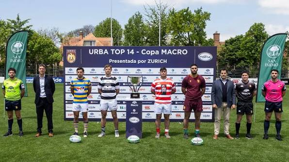
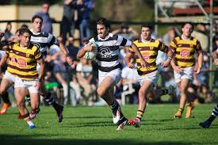
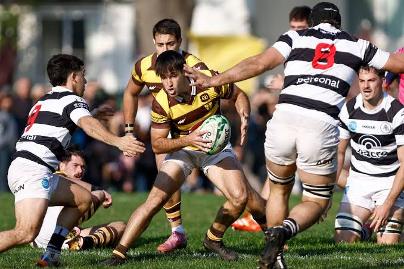
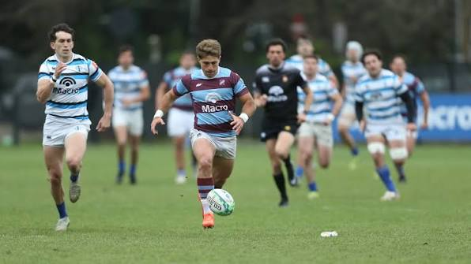
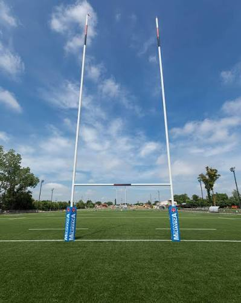
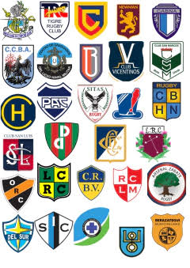
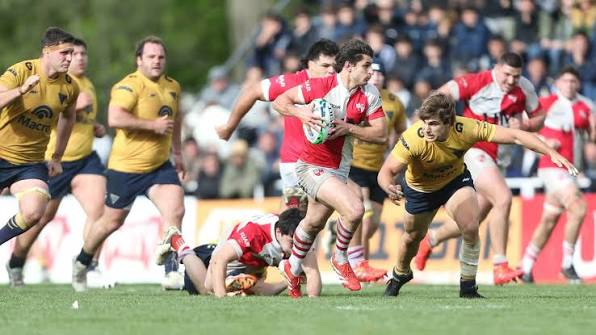

¿QUÉ ES LA URBA?
La Unión de Rugby de Buenos Aires organiza una gran parte de las competencias de rugby de la región. A lo largo de la temporada, distintos clubes participan en torneos y campeonatos de diferentes categorías.
En esta página podrás encontrar información sobre los equipos, resultados, posiciones y próximas fechas de los principales torneos.

GALERÍA



DATOS DESTACADOS


Posiciones y resultados
Consultá las tablas y enterate de los resultados de los últimos partidos.
Ver informaciónPARA CONOCER MÁS INFORMACIÓN
Visitá el sitio oficial de la URBA para conocer más sobre sus torneos, clubes y actividades.
Visitar sitio oficial de la URBA